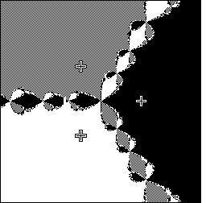
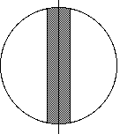

|  |
| Although the basin themselves are not fractal - they contain large regions without any substructure - their boundaries are fractal. Magnifying any small portion of the boundary reveals more of the same structure. |
| Starting from any point on the boundary, Newton's method does not converge to a root. |
| Any circle centered on a boundary point will contain points from which Newton's method converges to different roots. So if we are uncertain of the precise starting point, we cannot predict to which root, if any, Newton's will converge. |
| Look at a region R containing points of the boundary.
If we cannot specify a starting point any more closely than a circle of
radius ε, let |
| The uncertainty exponent α is |
| α = limε → 0 Log(U(ε))/Log(ε) |
| For example, if the boundary is a straight line and the region R is a circle of radius r, then |
| U(ε) is very close to (2r)⋅(2ε) |
|  |
| so the uncertainty exponent is 1. |
| If the boundary has dimension d, then |
| If α < 1, then the system exhibits final state sensitivity, making impossible prediction near the boundary. |
Return to Newton's Method Basins of Attraction.